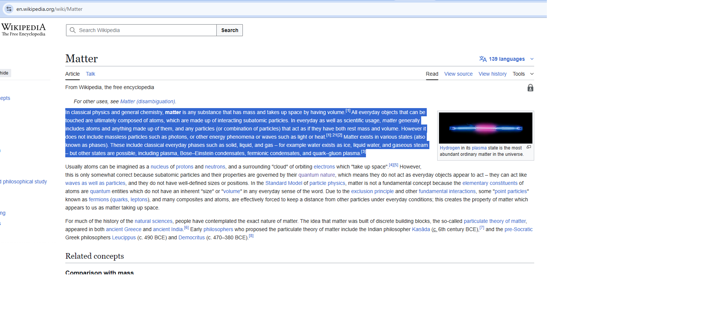
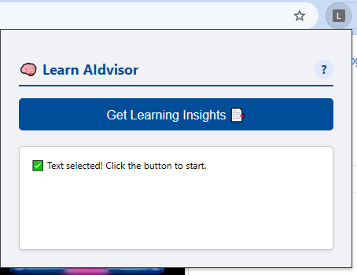
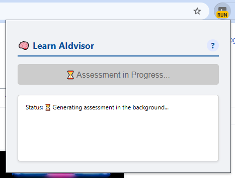
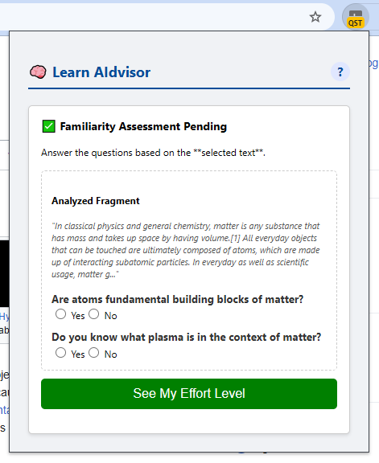
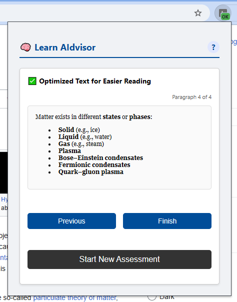
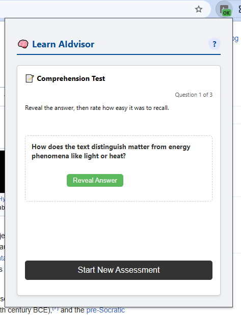

Step 6: Complete the Test
Once you rate the final question, you'll see a completion message. Now you have a new option: "Generate Study Guide". Click this button to create a final, personalized review sheet based on your performance.

This guide explains how to use Learn AIdvisor to make your online reading and learning more effective.
Simply use your mouse to highlight a fragment of text (at least 20 characters) that you want to analyze.
Click the Learn AIdvisor icon in your browser's toolbar. The popup will confirm that text has been selected. Click the "Get Learning Insights" button to start the analysis.
While the analysis is running, the extension will show a progress state.
The extension will present you with a couple of yes/no questions about key concepts found in the text. Your answers help personalize the analysis. Answering "Yes" tells the AIdvisor that you are already familiar with a concept, which reduces the final calculated effort score.
After you submit your answers by clicking "See My Effort Level," Learn AIdvisor will show you the final **Attentional Effort Level**, represented by an emoticon:
Based on the result, you will see one or two new buttons:
The final result is a restructured version of the text, using shorter sentences, lists, and bolding key terms.
The comprehension test presents you with questions in a card format.
Once you rate the final question, you'll see a completion message. Now you have a new option: "Generate Study Guide". Click this button to create a final, personalized review sheet based on your performance.
The Study Guide provides a powerful, focused learning tool: a Glossary of Key Concepts. This glossary is intelligently generated to include only the terms from the text that you found challenging (either by answering "No" in the initial assessment or by rating a comprehension question as difficult). This helps you focus your study time on exactly what you need to learn.